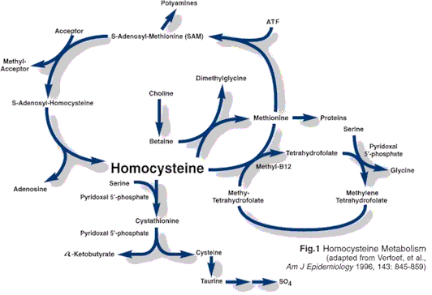

Pyridoksin, vitamin B6
Tilbake til artikkelserien om næringsstoffene
Pyridoksin, eller B6 som det som oftest omtales som, er det femte av de åtte B-vitaminene. B-vitaminene er vannløselige, så vi er avhengig av et kontinuerlig inntak av disse for å opprettholde god helse. Disse vitaminene er i stor grad involvert i kroppens energimetabolisme, som kofaktorer til viktige enzymer.
I kroppen finner vi vitamin B6 i hovedformene pyridoksin (PN), pyridoksamin (PM) og pyridoksal (PL), og som fosfatforbindelser av disse. Pyridoksalfosfat (PLP) og pyridoksaminfosfat (PMP) er kofaktorer for en rekke enzymer, og er ansvarlig for vitaminets metabolske funksjoner.
Opptak
B6 i mat finnes hovedsakelig i form av de fosforylerte formene, bundet til enzymer i maten. I tarmen vil disse defosforyleres av en alkalisk fosfatase, slik at PN, PM og PL frigjøres. Disse tas opp i tarmcellene ved passiv diffusjon.
Inne i tarmcellene fosforyleres vitaminet, og på den måten holdes det tilbake i disse cellene. For å sendes videre til leveren må molekylene igjen defosforyleres, slik at PN, PM og PL slippes ut i portåren. Denne mekanismen regulerer hvor mye vitamin som sendes til leveren.
I leveren foregår mesteparten av B6-metabolismen. Her dannes i hovedsak PLP, både for bruk av leveren selv, men også for å sendes ut til resten av kroppen. I blodet fraktes vitaminet sammen med røde blodceller eller bundet til albumin.
Omdanningen mellom de ulike formene av vitaminet er avhengig av andre næringsstoffer, blant annet riboflavin og niacin. Fosforyleringsreaksjonene er avhengig av sink.
Funksjoner
B6 fungerer som koenzym i en rekke enzymatiske reaksjoner, blant annet i overføring av enkarbon-enheter (metylgrupper), hemoglobinsyntesen, omsetning av de energigivende næringsstoffene og biosyntesen av neurotransmittere.
Overføring av enkarbon-enheter (først og fremst metyl) er en sentrale prosesser i kroppen, involvert i produksjon og modifisering av en rekke ulike molekyler. Kroppens primære metyldonor er en aktivert form for amionosyren metionin, S-Adenosylmetionin (SAM). Når SAM gir fra seg en metylgruppe, dannes det homocystein. Homocystein kan metaboliseres på flere måter. Det kan remetyleres for å danne metionin, noe som skjer ved at homocystein mottar en metylgruppe fra enten folat/B12 eller betain. Remetylering av homocystein er i seg selv uavhengig av B6, men vitaminet er kofaktor for serine-hydroksymetyltransferase, som er et viktig enzym som overfører en metylgruppe fra aminosyren serin til folat, og dermed er B6 også involvert i remetylering av homocystein.
Den alternative metabolismen av homocystein er gjennom det som heter transsulfureringsveien, og denne består av to B6-avhengige enzymer. Dette er den katabolske metabolismeveien, som fører til et irreversibelt tap av homocystein og metylgrupper. Denne veien ender opp med at det produseres cystein, som er et viktig substrat for produksjon av glutation, vår viktigste intracellulære antioksidant.
På figuren under ser du de to remetyleringsveiene på høyre siden av homocystein, og nedover mot bunnen av bildet går transsulfureringsveien. Resten av sirkelen illustrerer aktivering av metionin til SAM, den påfølgende metyleringsreaksjonen (som kan være over 150 forskjellige) og igjen dannelsen av nytt homocystein, før alt begynner på nytt.

Syntesen av hemoglobin, som er det oksygenbærende molekylet i de røde blodcellene, er avhengig av PLP. Mangel på B6 kan føre til tilstanden hypokrom anemi, der hemoglobinmengden i blodcellene er redusert.
I omsetningen av energigivende næringsstoffer bidrar B6 som koenzym i mange reaksjoner. Nesten alle aminosyrer er avhengig av PLP for å bygges opp, brytes ned eller omformes.
PLP er viktig i fettomsetningen, men mekanismene her er ikke helt klarlagt. Syntesen av karnitin, som transporterer fettsyrer inn i mitokondriene, er avhengig av PLP.
PLP er også sentral i glukosemetabolismen, og bidrar til glykogennedbrytningen og nydanning av glukose (glukoneogenesen). B6 er viktig i syntesen og metabolismen av niacin og folat.
PLP-avhengige dekarboksyleringsreaksjoner er sentral i syntesen av flere neurotransmittere, blant annet GABA, dopamin og noradrenalin og serotinin.
Behov og anbefalinger
De norske anbefalingene ligger i området 1,5mg/dag, noe som tilsvarer mengden som finnes i ca. 200g makrell, 200g kalkunfilet eller 200g polert ris.
Mangeltilstander
Mangel på B6 er veldig sjelden, og henger ofte sammen med mangel på andre B-vitaminer. Mangel kan skyldes malabsorbsjon, matmangel (anoreksi), alkoholisme eller genetiske sykdommer. Kostindusert mangel er sjeldent stor nok til å fremkalle symptomer.
Symptomer på mangel er dermatitt, forhøyede homocysteinnivåer, nedsatt immunforsvar og anemi. Hos barn kan mangel føre til epileptiske anfall, sannsynligvis pga redusert produksjon av neurotransmitteren GABA. Forhøyede homocysteinnivåer er en risikofaktor for hjerte- og karsykdommer, ved at det kan bidra til aterosklerose.
Kan vi få for mye?
Ved megadoser på over 200mg/dag er det observert noen uheldige effekter i form av sensorisk neuropati. Slike doser er det helt umulig å få i seg ved vanlig mat, og den øvre grensen for B6-inntak er satt til 100mg/dag.
Gode kilder
B6 finnes i mat stort sett bundet til protein, og proteinrik mat inneholder generelt mye av vitaminet. Kjøtt, fisk og egg er viktige kilder, men også fullkorn, grønnsaker, frukt og nøtter bidrar. Biotilgjengeligheten fra animalske kilder er estimert til ca 10% høyere enn fra vegetabilske kilder.